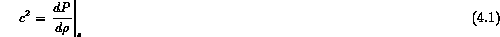
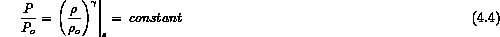
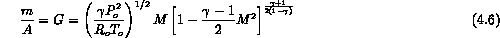
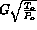
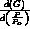
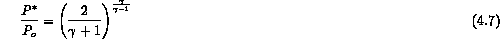
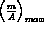
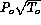

Consider a large tank containing a stagnant fluid with outlet (Figure 4.1) to a receiver volume. When a compressible fluid flows through this outlet (pipe, nozzle or orifice), there is a receiver pressure, , compared to the stagnation pressure,  , below which the flow rate (or mass velocity) will not increase. That is, for any receiver pressure below this critical pressure ratio the discharge flow rate will be constant (Figure 4.2). If one could make simultaneous measurements of the pressure, temperature, and mass flowrate at the outlet of the tank, one would find that the velocity of the mass flow corresponds to the sound speed of the fluid at the outlet exit plane. If one then calculates what the mass velocity will be for an isentropic expansion in a nozzle, the mass velocity is a maximum at just the critical pressure ratio,
, below which the flow rate (or mass velocity) will not increase. That is, for any receiver pressure below this critical pressure ratio the discharge flow rate will be constant (Figure 4.2). If one could make simultaneous measurements of the pressure, temperature, and mass flowrate at the outlet of the tank, one would find that the velocity of the mass flow corresponds to the sound speed of the fluid at the outlet exit plane. If one then calculates what the mass velocity will be for an isentropic expansion in a nozzle, the mass velocity is a maximum at just the critical pressure ratio,  , at which the fluid attains a velocity equal to its sound speed at these conditions at the outlet exit plane. Under the assumption of isentropic fluid flow (frictionless and adiabatic), this is proved by calculating the pressure ratio when the mass velocity is a maximum, determining the fluid velocity and comparing it to the speed of sound in the fluid [1-2]. Similar calculations can be made for other geometries or expansion processes and it is always found that choking occurs when the local fluid velocity is equal to the local sound speed [3].
, at which the fluid attains a velocity equal to its sound speed at these conditions at the outlet exit plane. Under the assumption of isentropic fluid flow (frictionless and adiabatic), this is proved by calculating the pressure ratio when the mass velocity is a maximum, determining the fluid velocity and comparing it to the speed of sound in the fluid [1-2]. Similar calculations can be made for other geometries or expansion processes and it is always found that choking occurs when the local fluid velocity is equal to the local sound speed [3].
Insofar as the flow is isentropic the critical flow velocity like the sound speed is a thermodynamic property. The sound speed, c, is defined as

where the specific entropy, s, is considered to be constant in the process. Let us consider a perfect gas as a representative single phase fluid where

Based on the sound speed definition we find that for a perfect gas
Now we can use this definition of the sound speed and incorporate it into the energy balance with mass continuity for the fluid to find the mass flowrate as a function of the Mach number.

where the subscript, o, denotes the stagnation condition where the velocity is approximately zero.
This shows that, for a given Mach Number, the flow is proportional to the stagnation pressure and inversely proportional to the square root of the stagnation temperature. For this reason, flow test data on compressors and turbines, or indeed on any flow passage which operates over a wide range of pressure and temperature levels, are usually plotted for  as the flow variable. In this way the results of a given test become applicable to operation at levels of temperature and pressure different from the original test conditions. To find the condition of maximum flow per unit area, we could compute the derivative  and set this derivative equal to zero. From this we would find that the critical pressure ratio is given by

An equivalent procedure would be to differentiate Eq. 6 with respect to M and set this derivative equal to zero. At this condition, we would find that the maximum flow occurs at M = 1.
However, neither of these procedures is necessary inasmuch as we have discussed quite generally that the cross-sectional area for isentropic flow passes through a minimum at Mach Number unity. Therefore, to find  , we need only set M = 1 in Eq. 6. Thus we find
For a given gas, therefore, the maximum flow per unit area depends only on the ratio  . For given values of the stagnation pressure and stagnation temperature and for a passage with a given minimum area, Eq. 8 shows that the maximum flow which can be passed is relatively large for gases of high molecular weight and relatively small for gases of low molecular weight. Doubling the pressure level doubles the maximum flow, whereas doubling the absolute temperature level reduces the maximum flow by about 30 percent.
As Figure 4.2 indicates for a converging nozzle the Mach number reaches unity at the point where the critical pressure ratio, , is given by equ IX.7 ( - .53 for air, - 1.4), which also coincides with the point of minimum area. This is the condition of critical flow or "choking" that was mentioned previously. One should note that the effect of friction and heat transfer can be considered but requires an iterative analytical solution or numerical solution to the one-dimensional problem depending on the complexity of the wall models, since the flowrate directly affects the frictional pressure drop. We consider this later under advanced models.